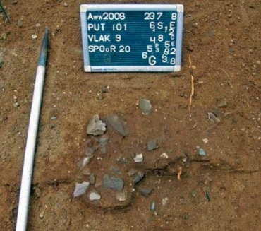
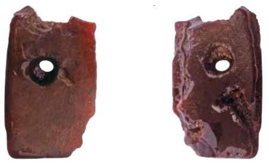

Lang geleden, in de bronstijd, maakten mensen vier kuilen bij een grafheuvel in Apeldoorn. In deze kuilen legden ze gebroken stenen en aardewerk.
De stenen waren eerst heel erg heet gemaakt, soms wel boven de 540 graden. Daarna kwamen ze in de kuilen. Als er water bij kwam, ontstond er stoom en een soort mist.
De kuilen lagen in een rechte lijn en hoorden bij de grafheuvel. Archeologen denken dat dit een ritueel was, een speciale handeling met een betekenis. Misschien wilden de mensen zo iets doen voor de overledenen.
We weten nog niet precies waarom ze dit deden, maar het was een belangrijk en bijzonder gebruik.


Video komt hier
Spel komt hier